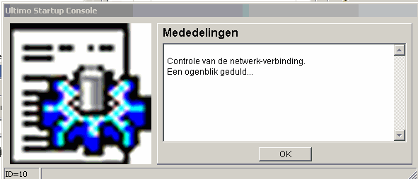
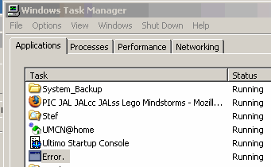
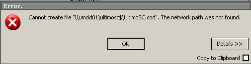
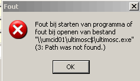

Dit venstert blokkeert alle programma's,
waarschijnlijk zit er een fout boodschap achter ...

hetgeen bevestigd wordt door

en de volgende komt heel vaak,
wnat na enige tijd komt ie achter het eerste plaatje naar voren.

na een reboot,
gebeurt er bij het starten van ultimo, vanuit sponbeheer:
